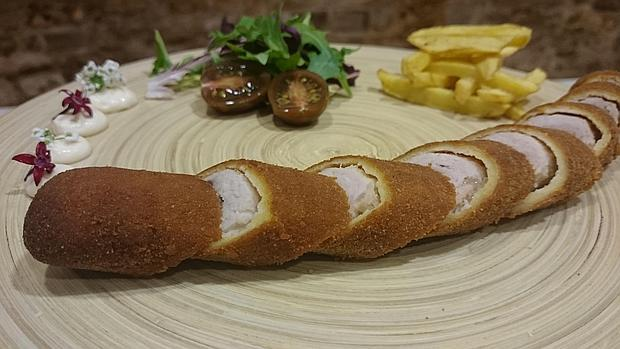

Descargar el pdf con los ingredientes Ingredientes flamenquin

- INGREDIENTES:
- 4 filetes de carne de cerdo.
- 4 filetes de carne de cerdo.
- 2 huevos.
- Pan rallado.
- Harina
- Aceite
- Sal al gusto
- -Preparar los flamenquines es una tarea fácil que no lleva apenas tiempo. Basta con extender los filetes
de cerdo y recortarlos para que tengan una forma rectangular.
- -No tiréis los recortes que son perfectos para empanar haciendo fingers o lágrimas de cerdo, que les
encantan a los niños.
- -Una vez cuadrados los filetes de cerdo, los cubrimos con lonchas de jamón serrano, o si os lo podéis
permitir, de jamón de cerdo ibérico.
- -En el caso de que queráis hacer algunos flamenquines con queso, será el momento de cubrir las lonchas
de jamón con lonchas de queso que funda bien.
- -Enrollamos los filetes sobre sí mismos de forma que el relleno quede dentro. Formamos bien el cilindro
y lo empanamos pasándolo por harina, huevo batido y pan rallado.
- -No olvidéis hacer esa operación también con los extremos de los flamenquines para que queden bien
cerrados.
- -Freímos los flamenquines por tandas en una sartén con abundante aceite de oliva virgen extra y los
escurrimos en papel absorbente para retirar el exceso de grasa.
- -Los cortamos en rodajas al bies y los llevamos a la mesa bien calientes.